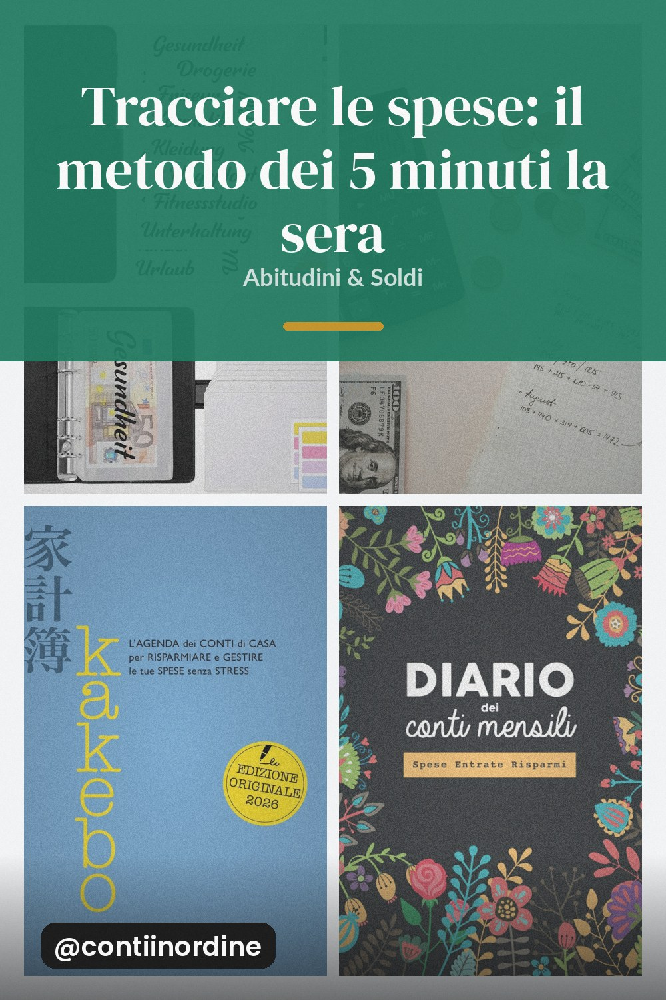
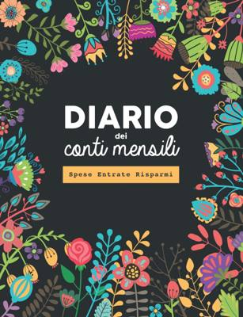

Cinque minuti la sera con il diario delle spese: categoria, importo, un commento. In un mese hai il quadro completo delle tue abitudini.

Il budget fallisce quasi sempre per un motivo solo: i numeri si aggiornano a fine mese, quando ormai non servono più a niente. Tracciare ogni sera costa cinque minuti e ti permette di correggere mentre il mese è ancora in corsa.
Un quaderno con la data in alto e due colonne: cosa hai comprato e quanto. Il conto dice quanto hai speso, il diario dice perché.
Cena sparecchiata, quaderno aperto, tre righe scritte. Non riepiloghi la giornata: annoti solo quello che hai comprato o pagato.
Spesa, trasporti, svago, extra. Le parole contano più del numero: quando a fine mese vedi 60 euro di "extra", capisci subito da dove tornano.
La riga che spiega la spesa ("libreria per i libri di scuola") è quella che ti fa riconoscere il pattern il mese dopo. È gratis e vale più del foglio.
Domenica: totali per categoria e confronto con la busta. Un'ora al mese di analisi vale più di dieci ore di ansia.
